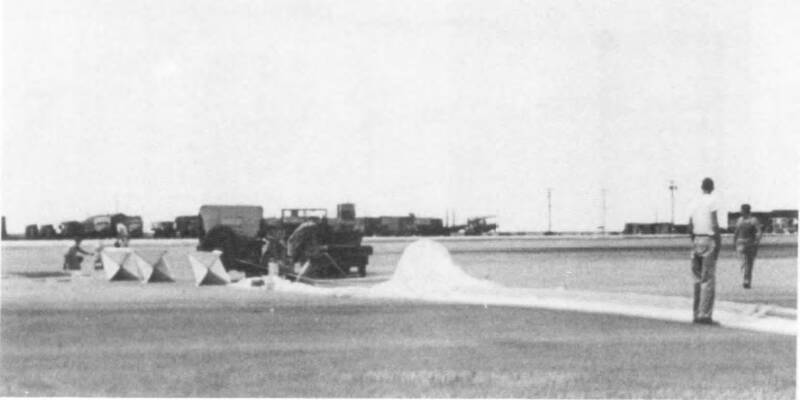

Project Mogul launches
Alamogordo, New Mexico, 1947

Balloon trains carrying microphones to detect Soviet nuclear tests were launched here. The Air Force says one of them was the Roswell debris. Confirmed program. 1
Open in the interactive Watcher
Sources
- Project Mogul Wikipedia